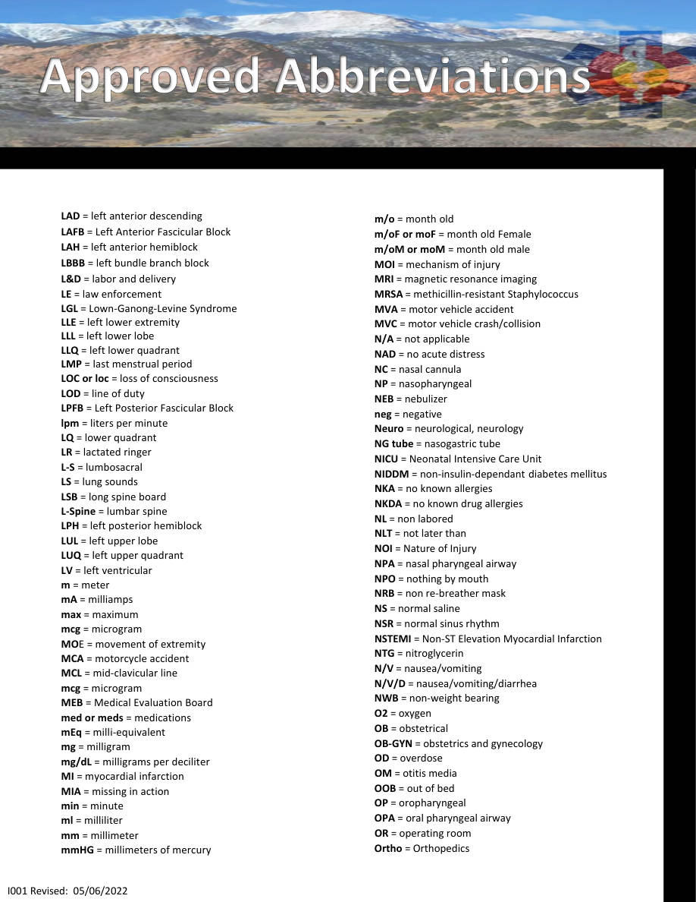
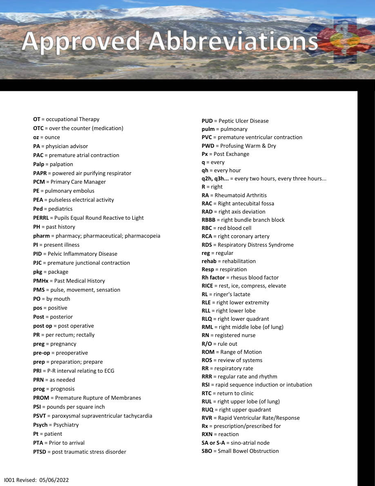
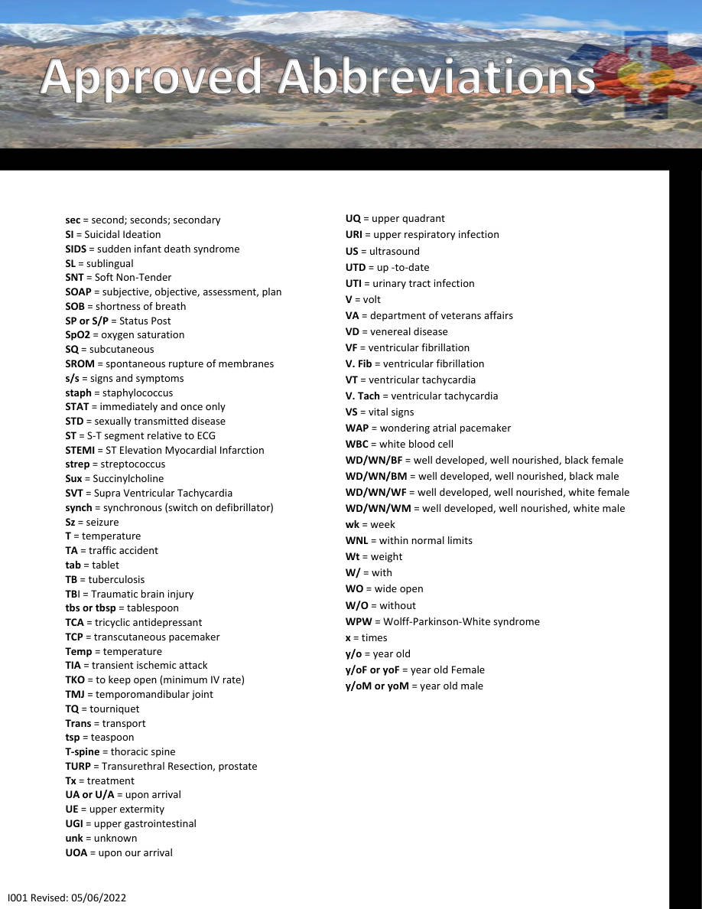

I001 — LAD = left anterior descending
Special Situations • Pages 143-145
Use the scanned pages to see the official tables/charts/algorithms. The extracted text is there for copy/paste and searchability.
Extracted text (page 143)
I001 Revised: 05/06/2022 LAD = left anterior descending LAFB = Left Anterior Fascicular Block LAH = left anterior hemiblock LBBB = left bundle branch block L&D = labor and delivery LE = law enforcement LGL = Lown-Ganong-Levine Syndrome LLE = left lower extremity LLL = left lower lobe LLQ = left lower quadrant LMP = last menstrual period LOC or loc = loss of consciousness LOD = line of duty LPFB = Left Posterior Fascicular Block lpm = liters per minute LQ = lower quadrant LR = lactated ringer L-S = lumbosacral LS = lung sounds LSB = long spine board L-Spine = lumbar spine LPH = left posterior hemiblock LUL = left upper lobe LUQ = left upper quadrant LV = left ventricular m = meter mA = milliamps max = maximum mcg = microgram MOE = movement of extremity MCA = motorcycle accident MCL = mid-clavicular line mcg = microgram MEB = Medical Evaluation Board med or meds = medications mEq = milli-equivalent mg = milligram mg/dL = milligrams per deciliter MI = myocardial infarction MIA = missing in action min = minute ml = milliliter mm = millimeter mmHG = millimeters of mercury m/o = month old m/oF or moF = month old Female m/oM or moM = month old male MOI = mechanism of injury MRI = magnetic resonance imaging MRSA = methicillin-resistant Staphylococcus MVA = motor vehicle accident MVC = motor vehicle crash/collision N/A = not applicable NAD = no acute distress NC = nasal cannula NP = nasopharyngeal NEB = nebulizer neg = negative Neuro = neurological, neurology NG tube = nasogastric tube NICU = Neonatal Intensive Care Unit NIDDM = non-insulin-dependant diabetes mellitus NKA = no known allergies NKDA = no known drug allergies NL = non labored NLT = not later than NOI = Nature of Injury NPA = nasal pharyngeal airway NPO = nothing by mouth NRB = non re-breather mask NS = normal saline NSR = normal sinus rhythm NSTEMI = Non-ST Elevation Myocardial Infarction NTG = nitroglycerin N/V = nausea/vomiting N/V/D = nausea/vomiting/diarrhea NWB = non-weight bearing O2 = oxygen OB = obstetrical OB-GYN = obstetrics and gynecology OD = overdose OM = otitis media OOB = out of bed OP = oropharyngeal OPA = oral pharyngeal airway OR = operating room Ortho = Orthopedics
Extracted text (page 144)
OT = occupational Therapy OTC = over the counter (medication) oz = ounce PA = physician advisor PAC = premature atrial contraction Palp = palpation PAPR = powered air purifying respirator PCM = Primary Care Manager PE = pulmonary embolus PEA = pulseless electrical activity Ped = pediatrics PERRL = Pupils Equal Round Reactive to Light PH = past history pharm = pharmacy; pharmaceutical; pharmacopeia PI = present illness PID = Pelvic Inflammatory Disease PJC = premature junctional contraction pkg = package PMHx = Past Medical History PMS = pulse, movement, sensation PO = by mouth pos = positive Post = posterior post op = post operative PR = per rectum; rectally preg = pregnancy pre-op = preoperative prep = preparation; prepare PRI = P-R interval relating to ECG PRN = as needed prog = prognosis PROM = Premature Rupture of Membranes PSI = pounds per square inch PSVT = paroxysmal supraventricular tachycardia Psych = Psychiatry Pt = patient PTA = Prior to arrival PTSD = post traumatic stress disorder PUD = Peptic Ulcer Disease pulm = pulmonary PVC = premature ventricular contraction PWD = Profusing Warm & Dry Px = Post Exchange q = every qh = every hour q2h, q3h... = every two hours, every three hours... R = right RA = Rheumatoid Arthritis RAC = Right antecubital fossa RAD = right axis deviation RBBB = right bundle branch block RBC = red blood cell RCA = right coronary artery RDS = Respiratory Distress Syndrome reg = regular rehab = rehabilitation Resp = respiration Rh factor = rhesus blood factor RICE = rest, ice, compress, elevate RL = ringer's lactate RLE = right lower extremity RLL = right lower lobe RLQ = right lower quadrant RML = right middle lobe (of lung) RN = registered nurse R/O = rule out ROM = Range of Motion ROS = review of systems RR = respiratory rate RRR = regular rate and rhythm RSI = rapid sequence induction or intubation RTC = return to clinic RUL = right upper lobe (of lung) RUQ = right upper quadrant RVR = Rapid Ventricular Rate/Response Rx = prescription/prescribed for RXN = reaction SA or S-A = sino-atrial node SBO = Small Bowel Obstruction I001 Revised: 05/06/2022
Extracted text (page 145)
sec = second; seconds; secondary SI = Suicidal Ideation SIDS = sudden infant death syndrome SL = sublingual SNT = Soft Non-Tender SOAP = subjective, objective, assessment, plan SOB = shortness of breath SP or S/P = Status Post SpO2 = oxygen saturation SQ = subcutaneous SROM = spontaneous rupture of membranes s/s = signs and symptoms staph = staphylococcus STAT = immediately and once only STD = sexually transmitted disease ST = S-T segment relative to ECG STEMI = ST Elevation Myocardial Infarction strep = streptococcus Sux = Succinylcholine SVT = Supra Ventricular Tachycardia synch = synchronous (switch on defibrillator) Sz = seizure T = temperature TA = traffic accident tab = tablet TB = tuberculosis TBI = Traumatic brain injury tbs or tbsp = tablespoon TCA = tricyclic antidepressant TCP = transcutaneous pacemaker Temp = temperature TIA = transient ischemic attack TKO = to keep open (minimum IV rate) TMJ = temporomandibular joint TQ = tourniquet Trans = transport tsp = teaspoon T-spine = thoracic spine TURP = Transurethral Resection, prostate Tx = treatment UA or U/A = upon arrival UE = upper extermity UGI = upper gastrointestinal unk = unknown UOA = upon our arrival UQ = upper quadrant URI = upper respiratory infection US = ultrasound UTD = up -to-date UTI = urinary tract infection V = volt VA = department of veterans affairs VD = venereal disease VF = ventricular fibrillation V. Fib = ventricular fibrillation VT = ventricular tachycardia V. Tach = ventricular tachycardia VS = vital signs WAP = wondering atrial pacemaker WBC = white blood cell WD/WN/BF = well developed, well nourished, black female WD/WN/BM = well developed, well nourished, black male WD/WN/WF = well developed, well nourished, white female WD/WN/WM = well developed, well nourished, white male wk = week WNL = within normal limits Wt = weight W/ = with WO = wide open W/O = without WPW = Wolff-Parkinson-White syndrome x = times y/o = year old y/oF or yoF = year old Female y/oM or yoM = year old male I001 Revised: 05/06/2022
Scanned pages (tables/charts preserved)
Page 143 scan
Page 144 scan
Page 145 scan
